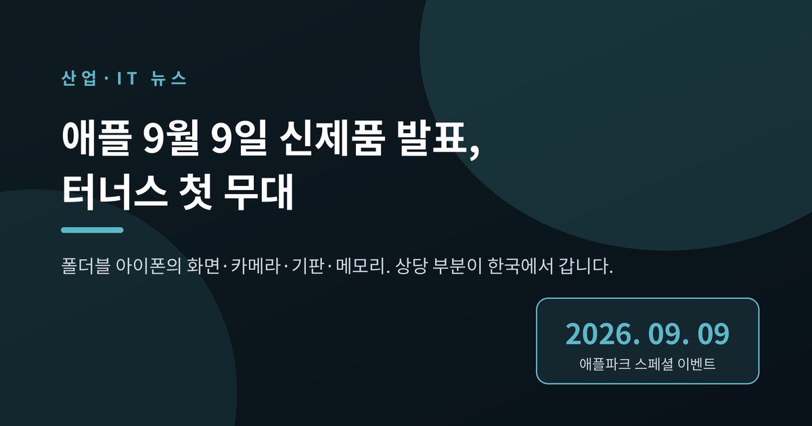
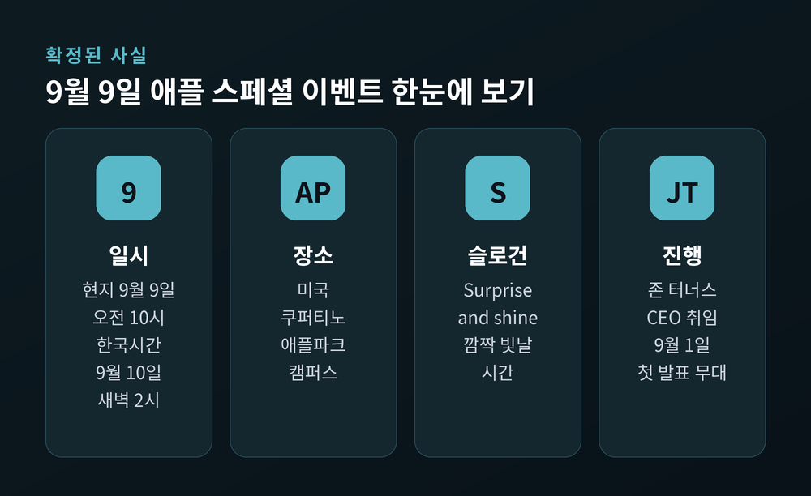
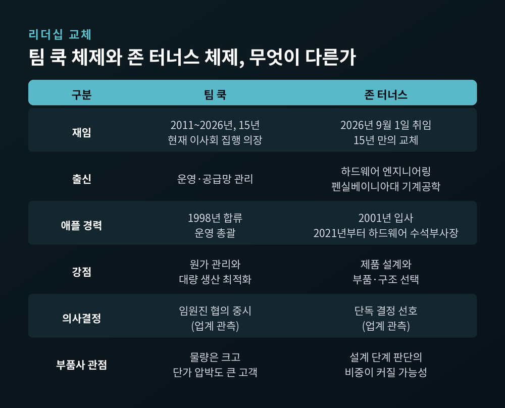
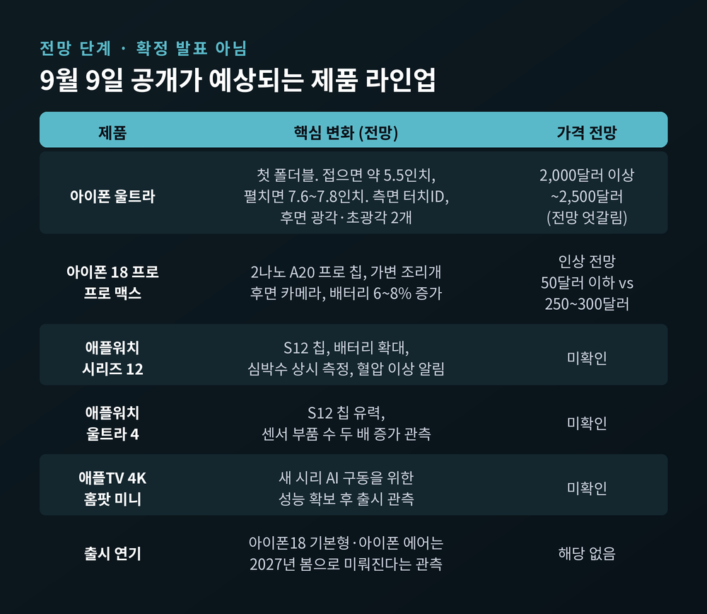
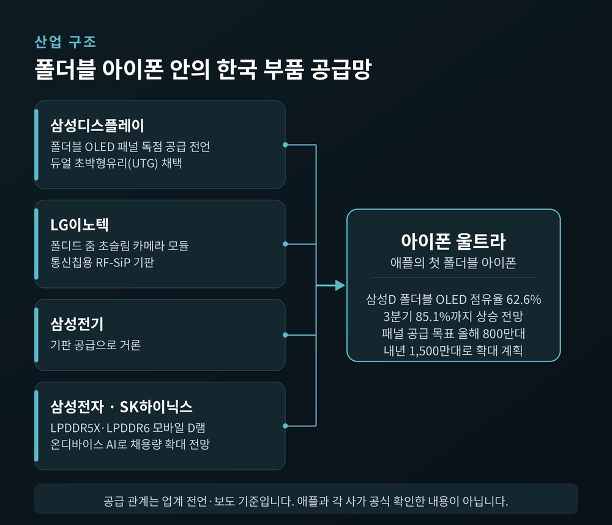
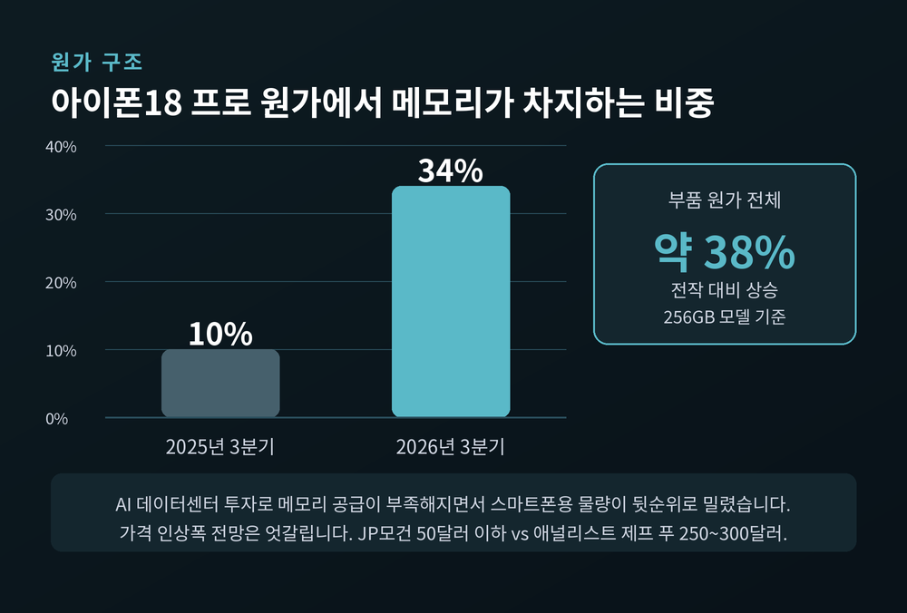

애플 9월 9일 신제품 발표, 터너스 첫 무대와 한국 부품업계 영향

이번 글에서는 오늘 밤 열리는 애플 신제품 발표 행사를 정리해 보겠습니다.
세 줄로 먼저 요약하겠습니다. 첫째, 애플은 한국시간 9월 10일 새벽 2시에 신제품 행사를 엽니다. 둘째, 존 터너스 신임 최고경영자가 처음으로 무대에 서는 자리입니다. 셋째, 여기서 공개될 첫 폴더블 아이폰의 핵심 부품 상당수를 한국 기업이 맡고 있습니다.
한 가지 미리 짚고 가겠습니다. 이 글을 쓰는 시점에 행사는 아직 시작되지 않았습니다. 그래서 제품 사양과 가격은 전부 업계 전망이며, 애플이 확정한 내용이 아닙니다. 어디까지가 사실이고 어디부터가 관측인지 구분해서 적겠습니다.
확정된 것 — 날짜, 장소, 그리고 슬로건
애플은 지난 8월 26일 초대장을 공개하며 행사 일정을 확정했습니다.
현지시간 9월 9일 수요일 오전 10시, 미국 캘리포니아주 쿠퍼티노의 애플파크 캠퍼스입니다. 한국시간으로는 9월 10일 목요일 새벽 2시입니다. 행사 주제는 'Surprise and shine'으로, 국내 매체들은 '깜짝 빛날 시간' 정도로 옮기고 있습니다.
여기까지는 애플이 직접 밝힌 사실입니다.
애플은 이날 하드웨어와 함께 iOS 27, iPadOS 27, 그리고 맥OS '골든 게이트'의 정식 출시 일정도 함께 안내할 예정입니다.

이 행사가 유독 무거운 이유
날짜보다 중요한 것은 무대에 서는 사람입니다.
존 터너스는 지난 9월 1일 애플의 새 최고경영자로 공식 취임했습니다. 15년간 회사를 이끈 팀 쿡은 이사회 집행 의장으로 자리를 옮겼습니다. 이번 행사는 터너스가 처음으로 무대 앞에 서서 행사의 시작과 끝을 맡는 자리입니다.
터너스의 이력은 전임자와 결이 다릅니다. 펜실베이니아대 기계공학과를 나와 2001년 애플에 입사했고, 2021년부터 하드웨어 엔지니어링 담당 수석 부사장을 맡아왔습니다. 제품을 직접 설계하고 만들어온 사람입니다.
예전 애플의 강점은 팀 쿡이 다듬어온 공급망과 원가 관리였습니다. 지금 애플의 지휘봉은 부품을 고르고 구조를 설계하던 엔지니어에게 넘어갔습니다.
이 차이가 부품 업계에 어떤 변화로 이어질지는 아직 알 수 없습니다. 터너스 체제의 실제 조달·단가 정책이 어떻게 바뀔지 확인된 자료는 없습니다. 다만 설계 단계의 의사결정 비중이 커질 가능성은 업계에서 자주 거론됩니다.
한 가지 더 있습니다. 터너스는 중요한 판단을 단독으로 내리는 편으로 알려져 있습니다. 임원진과의 협의를 중시했던 쿡의 방식과는 다르다는 관측이 나옵니다. 이 역시 관측이지 검증된 사실은 아닙니다.

공개가 예상되는 제품들 (전망 단계)
아래 내용은 전부 유출과 업계 전망입니다. 확정 발표가 아니라는 점을 다시 말씀드립니다.
가장 주목받는 제품은 애플의 첫 폴더블 아이폰입니다. 제품명은 '아이폰 울트라'가 유력하다는 것이 다수 관측입니다. 2017년 아이폰X 이후 애플이 처음 내놓는 새 폼팩터입니다. 책처럼 반으로 접히고, 닫으면 여권과 비슷한 형태가 될 것으로 전해집니다.
화면 크기는 소스마다 조금씩 다릅니다. 접었을 때 약 5.5인치, 펼쳤을 때 7.6인치라는 보도가 있고, 삼성디스플레이 패널 기준으로 7.8인치라는 보도도 있습니다. 정확한 수치는 발표를 봐야 확인됩니다.
두께를 줄이기 위해 페이스ID 대신 측면 버튼 터치ID를 쓸 것이라는 전망이 우세합니다. 후면 카메라는 광각과 초광각 두 개, 망원은 빠질 가능성이 거론됩니다.
가격 전망도 갈립니다. 다수 루머는 시작가 2,000달러 이상을 말합니다. 반면 디스플레이 업계 관계자는 2,500달러, 우리 돈 약 336만원 선을 가정한 출하량 계산을 내놓았습니다. 400달러가 넘는 간격입니다.
아이폰18 프로와 프로 맥스도 함께 나올 전망입니다. 2나노 공정의 A20 프로 칩이 실리고, 후면 카메라에 가변 조리개가 도입될 가능성이 있습니다. 흥미로운 대목은 일반 아이폰18과 아이폰 에어가 이번 가을에 나오지 않는다는 관측입니다. 2027년 봄으로 미뤄진다는 이야기가 나옵니다.
애플워치 시리즈12와 울트라4도 예정돼 있습니다. 겉모습 변화는 크지 않고 속이 바뀝니다. S12 칩, 배터리 용량 확대, 심박수 상시 측정, 혈압 이상 알림 강화가 핵심으로 꼽힙니다.
인공지능 쪽은 오해가 없어야 합니다. 새 시리 AI는 이미 지난 6월 세계개발자회의에서 공개됐습니다. 구글 제미나이 기술을 바탕으로 만든 애플 파운데이션 모델이 온디바이스와 프라이빗 클라우드 양쪽에서 돌아가는 구조입니다. 이번 행사의 관전 포인트는 새 기능 공개가 아니라, 그 기능이 실제 기기에 얹혀 정식 출시되는 시점을 확정하는 데 있습니다.

한국 부품 업계 — 삼성디스플레이가 가장 크게 웃습니다
여기부터가 국내 산업의 이야기입니다.
삼성디스플레이는 지난 9월 1일 애플 폴더블 OLED 양산에 본격 돌입했습니다. 업계에서는 첫 폴더블 아이폰 패널을 삼성디스플레이가 독점 공급하는 것으로 전해집니다. 다만 이 독점 계약은 양사가 공식 확인한 사안이 아닙니다.
숫자를 보면 격차가 분명합니다. 시장조사업체 옴디아 집계 기준, 폴더블 OLED 패널 시장에서 삼성디스플레이의 매출 점유율은 62.6%입니다. 2위 중국 BOE는 29%입니다. 3분기에는 삼성디스플레이 점유율이 85.1%까지 오르고 BOE는 12.3%로 떨어질 것이라는 전망이 나옵니다.
공급 목표도 크게 올렸습니다. 애플향 폴더블 OLED를 올해 800만대에서 내년 1,500만대로, 아이패드용 OLED를 올해 200만대에서 내년 900만대로 늘린다는 계획입니다. 두 품목을 합치면 올해 1,000만대에서 내년 2,400만대로 두 배를 넘습니다.
중국 업체들이 이 시장에 들어오지 못한 이유도 분명합니다. 애플이 화면 주름을 줄이려 힌지에 신소재를 쓰고 듀얼 초박형유리를 채택하면서, 요구 수준이 크게 높아졌기 때문입니다. 까다로운 품질 기준과 수율, 내구성 시험을 통과할 곳이 많지 않았다는 뜻입니다.

LG이노텍과 메모리 업계 — 기회와 딜레마가 함께 옵니다
LG이노텍의 성적표는 이미 숫자로 나와 있습니다. 올해 상반기 애플 대상 매출이 8조 8,000억원을 넘어 역대 최대를 기록했습니다. 지난해 상반기 6조 9,028억원에서 2조원 가까이 늘었습니다. 광학솔루션 매출은 9조 1,285억원, 영업이익은 4,099억원입니다.
폴더블 아이폰에는 접히는 힌지 구조를 피해 배치되는 고배율 폴디드 줌 초슬림 카메라 모듈을 공급하는 것으로 알려졌습니다. 통신칩용 RF-SiP 기판도 함께 넣는 것으로 전해집니다.
그렇다고 마냥 좋은 그림은 아닙니다. 상반기 카메라모듈 사업 이익률은 4.5%에 그쳤습니다. 반도체 기판 이익률 10.6%와 견주면 격차가 큽니다. 물량은 늘었는데 수익성은 얇은 구조인 셈입니다. 회사가 기판 쪽으로 무게를 옮기려는 이유이기도 합니다.
메모리는 더 복잡합니다. 폴더블폰의 멀티태스킹과 온디바이스 AI 기능이 강해지면서 LPDDR5X, LPDDR6 같은 고용량 모바일 D램 채용량이 늘어날 것으로 전망됩니다. 삼성전자와 SK하이닉스에는 분명한 기회입니다.
문제는 그 반대편입니다. AI 데이터센터 투자가 몰리면서 메모리 공급이 부족해졌고, 스마트폰용 물량은 뒷순위로 밀렸습니다. 그 결과 256GB 아이폰18 프로의 부품 원가는 전작 대비 약 38% 오를 것으로 예상됩니다. 메모리가 원가에서 차지하는 비중은 2025년 3분기 약 10%에서 2026년 3분기 약 34%로 뛰었습니다.
가격 인상폭 전망은 크게 엇갈립니다. JP모건은 50달러를 넘지 않을 것으로 봤고, 애널리스트 제프 푸는 250~300달러 인상을 예상했습니다. 어느 쪽이 맞을지는 발표를 봐야 압니다.

그늘도 함께 보아야 합니다
좋은 소식만 적으면 절반짜리 기사가 됩니다.
첫째, 수율입니다. 애플 폴더블폰은 힌지와 기판 같은 핵심 부품의 수율 문제로 연내 출하량이 기대에 못 미칠 것이라는 우려가 업계에 짙게 깔려 있습니다.
둘째, 가격입니다. 한 디스플레이 업계 관계자는 2,500달러 선을 가정하면 올해 600만대, 내년 1,100만대 출하가 가능하다고 봤습니다. 그러면서 "가격이 더 높거나 공급망 이슈가 심해지면 출하량은 더 줄어들 수 있다"고 덧붙였습니다. 패널 공급 목표가 800만대인데 실제 출하 전망은 600만대입니다. 이 간격이 곧 위험의 크기입니다.
셋째, 메모리 가격입니다. 삼성디스플레이의 공급 목표조차 시황에 따라 흔들릴 수 있습니다. 핵심 변수로 지목된 것이 메모리 가격 폭등과 그로 인한 애플의 가격 정책, 그리고 이어질 수요 변동입니다.
넷째, 의존 구조입니다. 단일 고객 매출 비중이 높은 기업은 애플의 물량과 단가 결정 한 번에 실적이 크게 흔들립니다.
이 글은 정보 정리를 목적으로 하며, 특정 종목에 대한 투자 권유가 아닙니다. 언급된 기업명과 수치는 공개된 보도를 정리한 것으로, 투자 판단과 그 결과에 대한 책임은 투자자 본인에게 있습니다.
무엇을 보아야 할까요
행사에서 확인할 지점을 정리하면 이렇습니다.
폴더블 아이폰의 최종 가격이 2,000달러대 초반인지 2,500달러에 가까운지가 첫 번째입니다. 이 한 줄이 국내 부품사의 내년 물량을 좌우합니다.
두 번째는 출시 시점과 초기 물량입니다. 수율 문제가 정리됐다면 애플은 공급 일정을 자신 있게 말할 것입니다. 말을 아낀다면 그 반대로 읽어야 합니다.
세 번째는 아이폰18 프로의 가격 인상폭입니다. 메모리 원가를 애플이 얼마나 소비자에게 넘기는지가 여기서 드러납니다.
네 번째는 터너스가 어떤 언어로 제품을 설명하는가입니다. 운영과 실적의 언어를 쓸지, 설계와 소재의 언어를 쓸지가 앞으로의 방향을 보여줄 것입니다.
정리하면 이렇습니다.
이번 행사는 새 아이폰을 보는 자리이면서, 동시에 한국 부품 산업의 내년 장부를 미리 읽는 자리입니다. 화면도 카메라도 기판도 메모리도, 상당 부분이 한국에서 만들어져 쿠퍼티노로 갑니다.
"애플의 새 폼팩터는 한국 공장의 수율 위에 서 있습니다."
새 최고경영자의 첫 무대가 국내 산업에도 좋은 신호가 되겠냐고 물으신다면, 오늘 밤 가격표 한 줄에 달려 있다고 답하겠습니다.